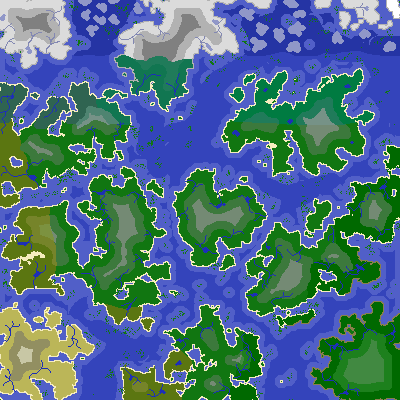
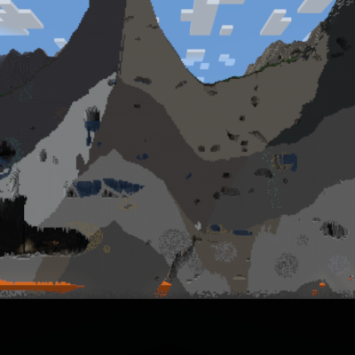

The world of TerraFirmaCraft is divided into large continents - landmasses many kilometers wide and seperated by oceans. In these, you may find mountain ranges, rivers, and many other environments.
A typical TFC world viewed at a large scale.
这个世界也是由不同类型的岩石构成的。一块同质的岩石区域有时会广达一公里，且根据深度的不同，会有其他两到三种不同的岩石构成分明的岩石层。不同的岩石类型中包含了不同的矿石，且大部分矿石只会出现在特定的岩石类型中。若想找到它们，就必须先找到正确的岩石类型。
The cross-section of a TFC world.
Ocean floors are composed of igneous extrusive rock - rocks that are formed by magma which cools quickly. Underneath igneous extrusive rock will likely be a igneous intrusive rock of the same grade.
For example, under Basalt (a mafic, igneous extrusive rock), will likely be Gabbro (a mafic, igneous intrusive rock).
The top layer of rock on a continent will either be igneous extrusive, or sedimentary. Underneath sedimentary rocks will likely be metamorphosed forms of the rock above.
For example, Marble (a metamorphic rock) will likely be found under Limestone or Chalk. High grade metamorphic rocks are found deep under other metamorphic or igneous rocks.
Finally, in mountainous regions you might also see uplift, where a metamorphic or igneous intrusive rock is found on the surface. Uplift rocks can be found above other continental sedimentary or higher-grade metamorphic rocks.
In addition, Dikes - small vertical slices of igneous intrusive rock - may appear scattered around the world,
protruding through the upper layers of rocks.
With all that in mind, the next few pages list the rocks of all four categories: Sedimentary, Metamorphic, Igneous Extrusive, and Igneous Intrusive. These categories determine where the rock can spawn (see the previous pages), and also what ores may spawn in this rock.
Sedimentary rocks are formed by the accumulation or deposition of mineral or organic particles. They are typically found on the top layers of rock in continental areas. They are:
Metamorphic rocks are created by a process called metamorphism. They can be found underneath corresponding sedimentary or igneous rock, or in uplift areas. They are:
Igneous Extrusive rocks are formed from magma cooling on the Earth's surface. They can be found on the top layer of rock in continental areas, or on the floor of oceans. They are:
Igneous Intrusive rocks are formed from magma which cooled under the Earth's crust. They can be found deep underground, or rarely in dikes or uplift areas. They are: